library(tidyverse)
library(caret)
library(dslabs)36 Examples of algorithms
There are hundreds of machine learning algorithms.
Here we provide a few examples spanning rather different approaches.
Throughout the chapter we will be using the two predictor digits data introduced previously to demonstrate how the algorithms work.
We focus on the concepts and ideas behind the algorithms using illustrative datasets from the dslabs package:
- We previously showed an efficient way to implement these ideas using the caret package.
36.1 Logistic regression
- We previously used linear regression to predict classes by fitting the model
\[ p(\mathbf{x}) = \mbox{Pr}(Y=1 \mid X_1=x_1 , X_2 = x_2) = \beta_0 + \beta_1 x_1 + \beta_2 x_2 \] using least squares after assigning numeric values of 0 and 1 to the outcomes \(y\), and applied regression as if the data were continuous.
- A obvious problem with this approach is that \(\hat{p}(\mathbf{x})\) can be negative and larger than 1:
fit_lm <- lm(y ~ x_1 + x_2, data = mutate(mnist_27$train,y = ifelse(y == 7, 1, 0)))
range(fit_lm$fitted)[1] -0.2196035 1.9220528To avoid this we can apply the approach described in Section 23.3 that is more appropriate for binary data.
We write the model like this:
\[ \log \frac{p(\mathbf{x})}{1-p(\mathbf{x})} = \beta_0 + \beta_1 x_1 + \beta_2 x_2 \]
We can then find the the maximum likelihood estimates (MLE) of the model parameters and predict using the estimate \(p(\mathbf{x})\) to obtain an accuracy of 0.775.
We see that logistic regression performs similarly to regression.
This is not surprising, given that the estimate of \(\hat{p}(\mathbf{x})\) looks similar as well:
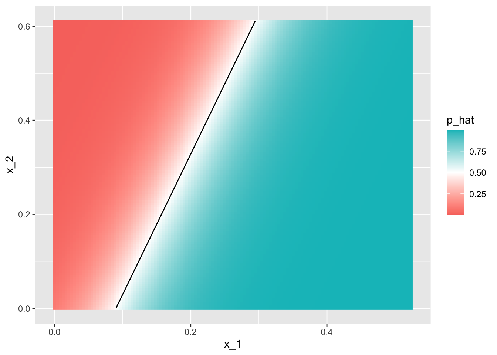
- Just like regression, the decision rule is a line, a fact that can be corroborated mathematically, definint \(g(x) = \log \{x/(1-x)\}\), we have:
\[ g^{-1}(\hat{\beta}_0 + \hat{\beta}_1 x_1 + \hat{\beta}_2 x_2) = 0.5 \implies \hat{\beta}_0 + \hat{\beta}_1 x_1 + \hat{\beta}_2 x_2 = g(0.5) = 0 \implies x_2 = -\hat{\beta}_0/\hat{\beta}_2 -\hat{\beta}_1/\hat{\beta}_2 x_1 \]
Thus, just like with regression, \(x_2\) is a linear function of \(x_1\). This implies that our logistic regression approach has no chance of capturing the non-linear nature of the true \(p(\mathbf{x})\).
We now described some techniques that estimate the conditional probability in a way that is more flexible.
Note
You are ready to do exercises 1 - 11.
36.2 k-nearest neighbors
We previously introduced the kNN algorithm.
We noted that \(k=31\) provided the highest accuracy in the test set.
Using \(k=31\) we obtain an accuracy 0.825, an improvement over regression.
A plot of the estimated conditional probability shows that the kNN estimate is flexible enough and does indeed capture the shape of the true conditional probability.
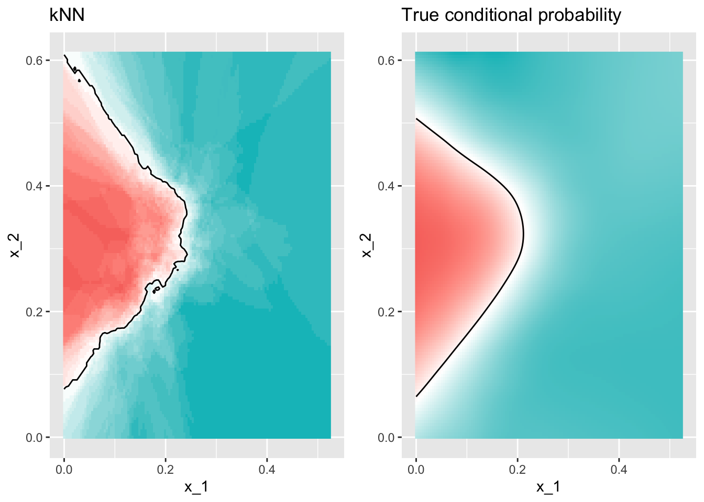
Note
You are ready to do exercises 12 - 13.
36.3 Generative models
We have described how, when using squared loss, the conditional expectation provide the best approach to developing a decision rule.
In a binary case, the smallest true error we can achieve is determined by Bayes’ rule, which is a decision rule based on the true conditional probability:
\[ p(\mathbf{x}) = \mbox{Pr}(Y = 1 \mid \mathbf{X}=\mathbf{x}) \]
We have described several approaches to estimating \(p(\mathbf{x})\).
In all these approaches, we estimate the conditional probability directly and do not consider the distribution of the predictors.
In machine learning, these are referred to as discriminative approaches.
However, Bayes’ theorem tells us that knowing the distribution of the predictors \(\mathbf{X}\) may be useful.
Methods that model the joint distribution of \(Y\) and \(\mathbf{X}\) are referred to as generative models (we model how the entire data, \(\mathbf{X}\) and \(Y\), are generated).
We start by describing the most general generative model, Naive Bayes, and then proceed to describe two specific cases, quadratic discriminant analysis (QDA) and linear discriminant analysis (LDA).
36.3.1 Naive Bayes
- Recall that Bayes rule tells us that we can rewrite \(p(\mathbf{x})\) like this:
\[ p(\mathbf{x}) = \mbox{Pr}(Y = 1|\mathbf{X}=\mathbf{x}) = \frac{f_{\mathbf{X}|Y = 1}(\mathbf{x}) \mbox{Pr}(Y = 1)} { f_{\mathbf{X}|Y = 0}(\mathbf{x})\mbox{Pr}(Y = 0) + f_{\mathbf{X}|Y = 1}(\mathbf{x})\mbox{Pr}(Y = 1) } \]
with \(f_{\mathbf{X}|Y = 1}\) and \(f_{\mathbf{X}|Y = 0}\) representing the distribution functions of the predictor \(\mathbf{X}\) for the two classes \(Y = 1\) and \(Y = 0\).
The formula implies that if we can estimate these conditional distributions of the predictors, we can develop a powerful decision rule.
However, this is a big if.
As we go forward, we will encounter examples in which \(\mathbf{X}\) has many dimensions and we do not have much information about the distribution.
In these cases, Naive Bayes will be practically impossible to implement.
However, there are instances in which we have a small number of predictors (not much more than 2) and many categories in which generative models can be quite powerful.
We describe two specific examples and use our previously described case studies to illustrate them.
Let’s start with a very simple and uninteresting, yet illustrative, case: the example related to predicting sex from height.
set.seed(1995)
y <- heights$height
test_index <- createDataPartition(y, times = 1, p = 0.5, list = FALSE)
train_set <- heights |> slice(-test_index)
test_set <- heights |> slice(test_index)In this case, the Naive Bayes approach is particularly appropriate because we know that the normal distribution is a good approximation for the conditional distributions of height given sex for both classes \(Y = 1\) (female) and \(Y = 0\) (male).
This implies that we can approximate the conditional distributions \(f_{X|Y = 1}\) and \(f_{X|Y = 0}\) by simply estimating averages and standard deviations from the data:
params <- train_set |> group_by(sex) |> summarize(avg = mean(height), sd = sd(height))
params# A tibble: 2 × 3
sex avg sd
<fct> <dbl> <dbl>
1 Female 64.8 4.14
2 Male 69.2 3.57- The prevalence, which we will denote with \(\pi = \mbox{Pr}(Y = 1)\), can be estimated from the data with:
pi <- train_set |> summarize(pi = mean(sex == "Female")) |> pull(pi)
pi[1] 0.2118321- Now we can use our estimates of average and standard deviation to get an actual rule:
x <- test_set$height
f0 <- dnorm(x, params$avg[2], params$sd[2])
f1 <- dnorm(x, params$avg[1], params$sd[1])
p_hat_bayes <- f1*pi / (f1*pi + f0*(1 - pi))- Our Naive Bayes estimate \(\hat{p}(x)\) looks a lot like a logistic regression estimate:

In fact, we can show that the Naive Bayes approach is similar to the logistic regression prediction mathematically.
However, we leave the demonstration to a more advanced text, such as the Elements of Statistical Learning1. We can see that they are similar empirically by comparing the two resulting curves.
36.3.2 Controlling prevalence
One useful feature of the Naive Bayes approach is that it includes a parameter to account for differences in prevalence.
Using our sample, we estimated \(f_{X|Y = 1}\), \(f_{X|Y = 0}\) and \(\pi\). If we use hats to denote the estimates, we can write \(\hat{p}(x)\) as:
\[ \hat{p}(x)= \frac{\hat{f}_{X|Y = 1}(x) \hat{\pi}} { \hat{f}_{X|Y = 0}(x)(1-\hat{\pi}) + \hat{f}_{X|Y = 1}(x)\hat{\pi} } \]
As we discussed earlier, our sample has a much lower prevalence, 0.21, than the general population.
So if we use the rule \(\hat{p}(x) > 0.5\) to predict females, our accuracy will be affected due to the low sensitivity:
y_hat_bayes <- ifelse(p_hat_bayes > 0.5, "Female", "Male")
sensitivity(data = factor(y_hat_bayes), reference = factor(test_set$sex))[1] 0.2125984- Again, this is because the algorithm gives more weight to specificity to account for the low prevalence:
specificity(data = factor(y_hat_bayes), reference = factor(test_set$sex))[1] 0.9674185This is due mainly to the fact that \(\hat{\pi}\) is substantially less than 0.5, so we tend to predict
Malemore often.It makes sense for a machine learning algorithm to do this in our sample because we do have a higher percentage of males.
But if we were to extrapolate this to a general population, our overall accuracy would be affected by the low sensitivity.
The Naive Bayes approach gives us a direct way to correct this since we can simply force \(\hat{\pi}\) to be whatever value we want it to be.
So to balance specificity and sensitivity, instead of changing the cutoff in the decision rule, we could simply change \(\hat{\pi}\) to 0.5 like this:
p_hat_bayes_unbiased <- f1 * 0.5 / (f1 * 0.5 + f0 * (1 - 0.5))
y_hat_bayes_unbiased <- ifelse(p_hat_bayes_unbiased > 0.5, "Female", "Male")- Note the difference in sensitivity with a better balance:
sensitivity(factor(y_hat_bayes_unbiased), factor(test_set$sex))[1] 0.6929134specificity(factor(y_hat_bayes_unbiased), factor(test_set$sex))[1] 0.8320802- The new rule also gives us a very intuitive cutoff between 66-67, which is about the middle of the female and male average heights:
plot(x, p_hat_bayes_unbiased)
abline(h = 0.5, lty = 2) +
abline(v = 67, lty = 2)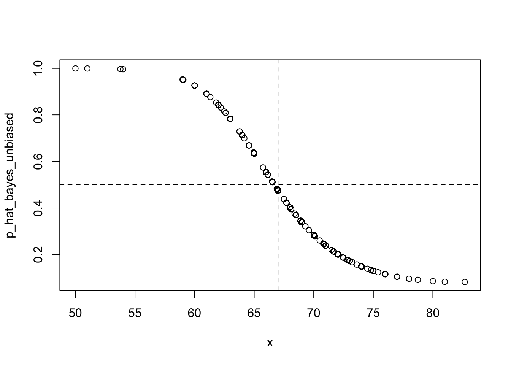
integer(0)36.3.3 Quadratic discriminant analysis
Quadratic Discriminant Analysis (QDA) is a version of Naive Bayes in which we assume that the distributions \(p_{\mathbf{X}|Y = 1}(x)\) and \(p_{\mathbf{X}|Y = 0}(\mathbf{x})\) are multivariate normal.
The simple example we described in the previous section is actually QDA. Let’s now look at a slightly more complicated case: the 2 or 7 example.
In this case, we have two predictors so we assume each one is bivariate normal.
This implies that we need to estimate two averages, two standard deviations, and a correlation for each case \(Y = 1\) and \(Y = 0\).
Once we have these, we can approximate the distributions \(f_{X_1,X_2|Y = 1}\) and \(f_{X_1, X_2|Y = 0}\).
We can easily estimate parameters from the data:
params <- mnist_27$train |>
group_by(y) |>
summarize(avg_1 = mean(x_1), avg_2 = mean(x_2),
sd_1= sd(x_1), sd_2 = sd(x_2),
r = cor(x_1, x_2))
params# A tibble: 2 × 6
y avg_1 avg_2 sd_1 sd_2 r
<fct> <dbl> <dbl> <dbl> <dbl> <dbl>
1 2 0.136 0.287 0.0670 0.0600 0.415
2 7 0.238 0.290 0.0745 0.104 0.468- With these estimates in place, all we need are the prevalence \(\pi\) to to compute
\[ \hat{p}(\mathbf{x})= \frac{\hat{f}_{\mathbf{X}|Y = 1}(\mathbf{x}) \hat{\pi}} { \hat{f}_{\mathbf{X}|Y = 0}(x)(1-\hat{\pi}) + \hat{f}_{\mathbf{X}|Y = 1}(\mathbf{x})\hat{\pi} } \]
Note that the densities \(f\) are bivariate normal distributions.
Here we provide a visual way of showing the approach.
We plot the data and use contour plots to give an idea of what the two estimated normal densities look like (we show the curve representing a region that includes 95% of the points):
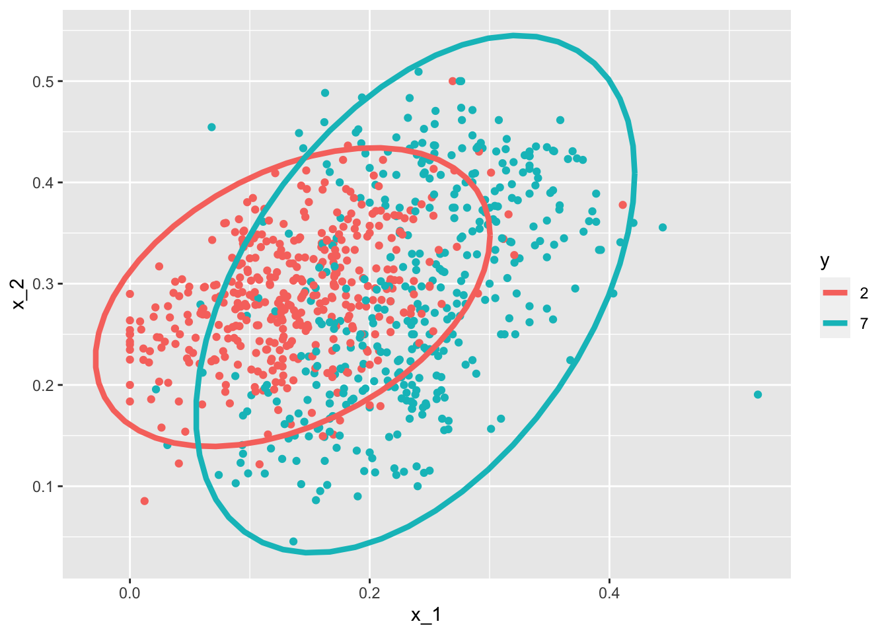
- We can fit QDA using the
qdafunction the MASS package:
library(MASS)
train_qda <- qda(y ~ ., data = mnist_27$train)
y_hat <- predict(train_qda, mnist_27$test)$class- We see that we obtain relatively good accuracy
confusionMatrix(y_hat, mnist_27$test$y)$overall["Accuracy"] Accuracy
0.815 - The conditional probability looks relatively good, although it does not fit as well as the kernel smoothers:
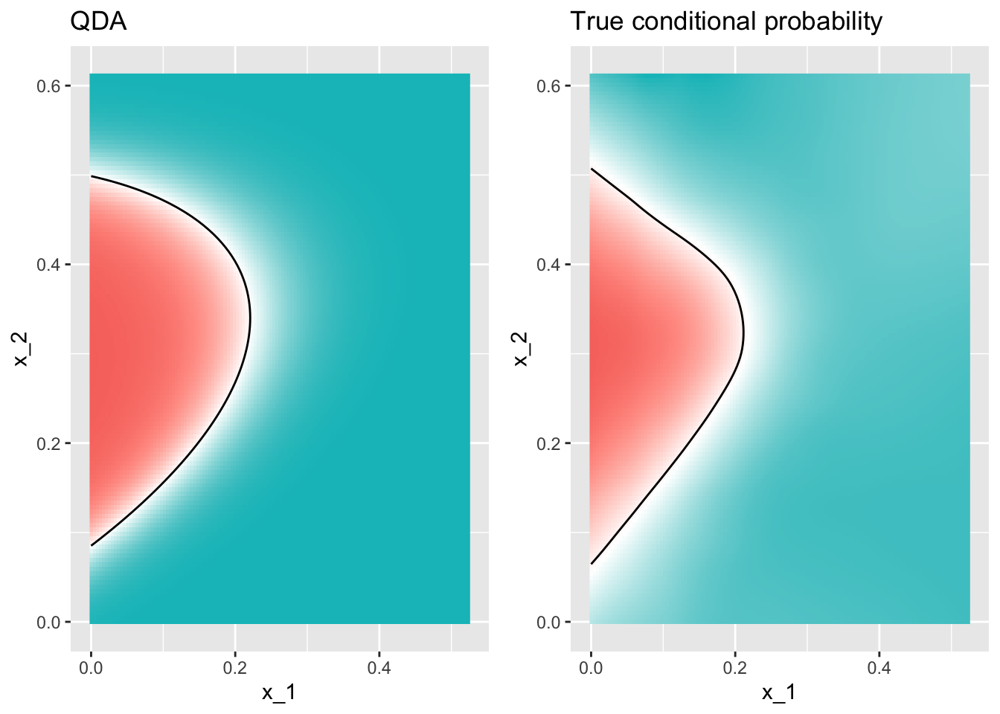
One reason QDA does not work as well as the kernel methods is because the assumption of normality do not quite hold.
Although for the 2s it seems reasonable, for the 7s it does seem to be off.
Notice the slight curvature in the points for the 7s:
mnist_27$train |> mutate(y = factor(y)) |>
ggplot(aes(x_1, x_2, fill = y, color = y)) +
geom_point(show.legend = FALSE) +
stat_ellipse(type = "norm") +
facet_wrap(~y)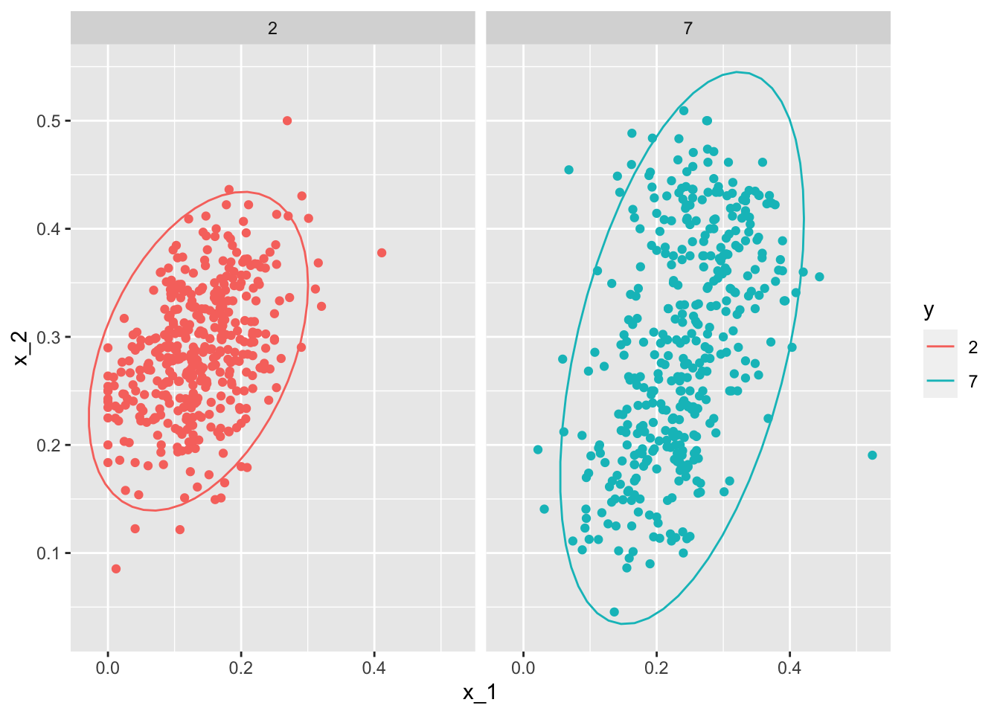
QDA can work well here, but it becomes harder to use as the number of predictors increases.
Here we have 2 predictors and had to compute 4 means, 4 SDs, and 2 correlations.
Notice that if we have 10 predictors, we have 45 correlations for each class.
In general, the formula is \(K\times p(p-1)/2\), which gets big fast.
Once the number of parameters approaches the size of our data, the method becomes impractical due to overfitting.
36.3.4 Linear discriminant analysis
A relatively simple solution to QDA’s problem of having too many parameters is to assume that the correlation structure is the same for all classes, which reduces the number of parameters we need to estimate.
In this case the the distributions looks like this:
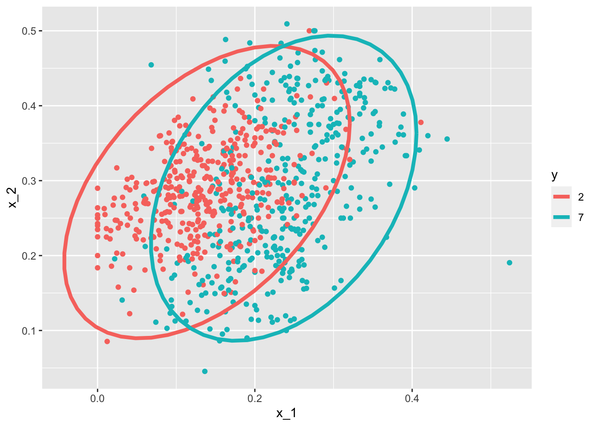
- We can LDA using the MASS
ldafunction:
Now the size of the ellipses as well as the angles are the same.
This is because they are assumed to have the same standard deviations and correlations.
Although this added constrain lowers the number of parameters, the rigidity lowers our accuracy to:
confusionMatrix(y_hat, mnist_27$test$y)$overall["Accuracy"]Accuracy
0.775 When we force this assumption, we can show mathematically that the boundary is a line, just as with logistic regression.
For this reason, we call the method linear discriminant analysis (LDA). Similarly, for QDA, we can show that the boundary must be a quadratic function.
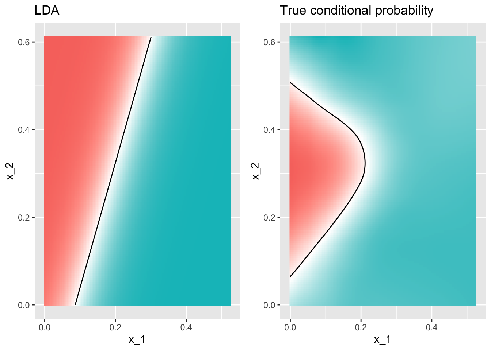
- In the case of LDA, the lack of flexibility does not permit us to capture the non-linearity in the true conditional probability function.
36.3.5 Connection to distance
- The normal density is:
\[ f(x) = \frac{1}{\sqrt{2\pi} \sigma} \exp\left\{ - \frac{(x-\mu)^2}{\sigma^2}\right\} \]
- If we remove the constant \(1/(\sqrt{2\pi} \sigma)\) and then take the log, we get:
\[ - \frac{(x-\mu)^2}{\sigma^2} \]
which is the negative of a distance squared scaled by the standard deviation.
- For higher dimensions, the same is true except the scaling is more complex and involves correlations.
Note
You are now ready to do exercises 14-22.
36.4 Classification and regression trees (CART)
36.4.1 The curse of dimensionality
We described how methods such as LDA and QDA are not meant to be used with many predictors \(p\) because the number of parameters that we need to estimate becomes too large.
For example, with the digits example \(p = 784\), we would have over 600,000 parameters with LDA, and we would multiply that by the number of classes for QDA.
Kernel methods such as kNN or local regression do not have model parameters to estimate.
However, they also face a challenge when multiple predictors are used due to what is referred to as the curse of dimensionality. The dimension here refers to the fact that when we have \(p\) predictors, the distance between two observations is computed in \(p\)-dimensional space.
A useful way of understanding the curse of dimensionality is by considering how large we have to make a span/neighborhood/window to include a given percentage of the data.
Remember that with larger neighborhoods, our methods lose flexibility, and to be flexible we need to keep the neighborhoods small.
To see how this becomes an issue for higher dimensions, suppose we have one continuous predictor with equally spaced points in the [0,1] interval and we want to create windows that include 1/10th of data.
Then it’s easy to see that our windows have to be of size 0.1:
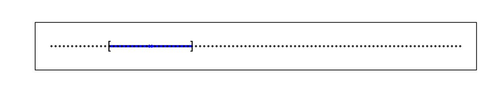
Now, for two predictors, if we decide to keep the neighborhood just as small, 10% for each dimension, we include only 1 point.
If we want to include 10% of the data, then we need to increase the size of each side of the square to \(\sqrt{.10} \approx .316\):

Using the same logic, if we want to include 10% of the data in a three-dimensional space, then the side of each cube is \(\sqrt[3]{.10} \approx 0.464\). In general, to include 10% of the data in a case with \(p\) dimensions, we need an interval with each side of size \(\sqrt[p]{.10}\) of the total.
This proportion gets close to 1 quickly, and if the proportion is 1 it means we include all the data and are no longer smoothing.
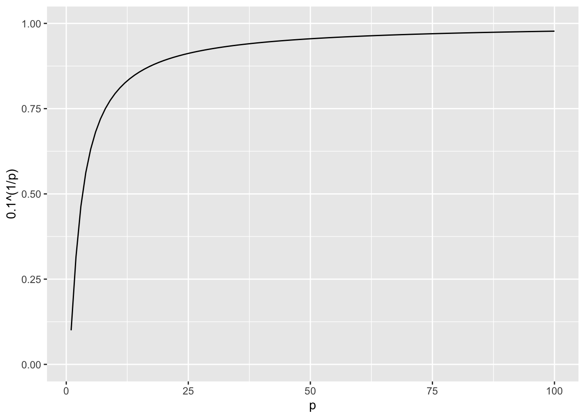
By the time we reach 100 predictors, the neighborhood is no longer very local, as each side covers almost the entire dataset.
Here we look at a set of elegant and versatile methods that adapt to higher dimensions and also allow these regions to take more complex shapes while still producing models that are interpretable.
These are very popular, well-known and studied methods.
We will concentrate on regression and decision trees and their extension to random forests.
36.4.2 CART motivation
- To motivate this section, we will use a new dataset that includes the breakdown of the composition of olive oil into 8 fatty acids:
names(olive) [1] "region" "area" "palmitic" "palmitoleic" "stearic"
[6] "oleic" "linoleic" "linolenic" "arachidic" "eicosenoic" - For illustrative purposes, we will try to predict the region using the fatty acid composition values as predictors.
table(olive$region)
Northern Italy Sardinia Southern Italy
151 98 323 - We remove the
areacolumn because we won’t use it as a predictor.
olive <- dplyr::select(olive, -area)Using kNN we can achieve a test set accuracy of 0.9717332. However, a bit of data exploration reveals that we should be able to do even better.
For example, if we look at the distribution of each predictor stratified by region we see that eicosenoic is only present in Southern Italy and that linoleic separates Northern Italy from Sardinia.
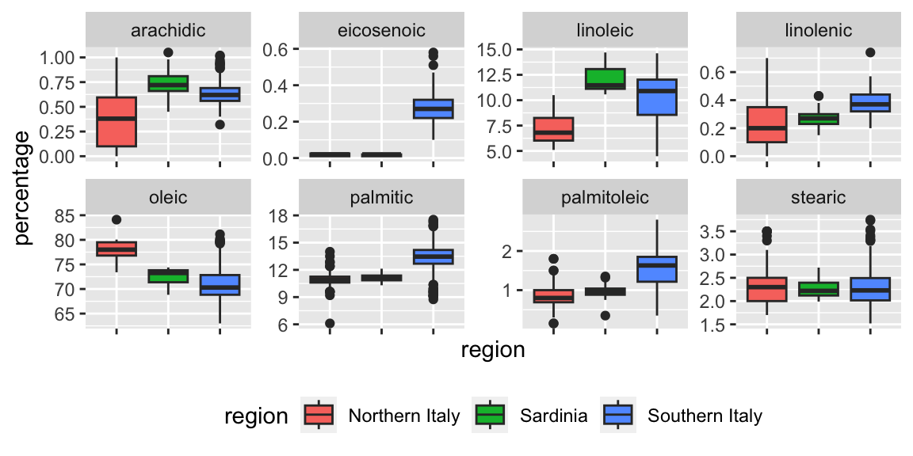
This implies that we should be able to build an algorithm that predicts perfectly!
We can see this clearly by plotting the values for eicosenoic and linoleic.
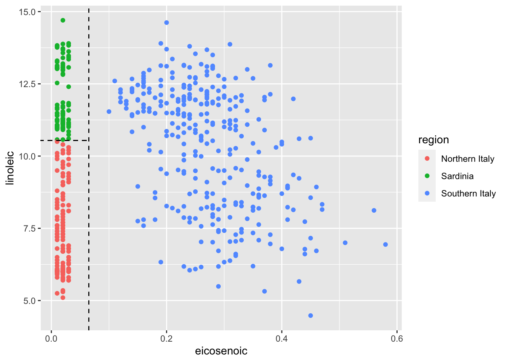
We previously defined predictor spaces.
The predictor space here consists of eight-dimensional points with values between 0 and 100.
In the plot above, we show the space defined by the two predictors eicosenoic and linoleic, and, by eye, we can construct a prediction rule that partitions the predictor space so that each partition contains only outcomes of a one category.
This in turn can be used to define an algorithm with perfect accuracy.
Specifically, we define the following decision rule: if eicosenoic is larger than 0.065, predict Southern Italy.
If not, then if linoleic is larger than \(10.535\), predict Sardinia, and if lower, predict Northern Italy.
We can draw this decision tree like this:
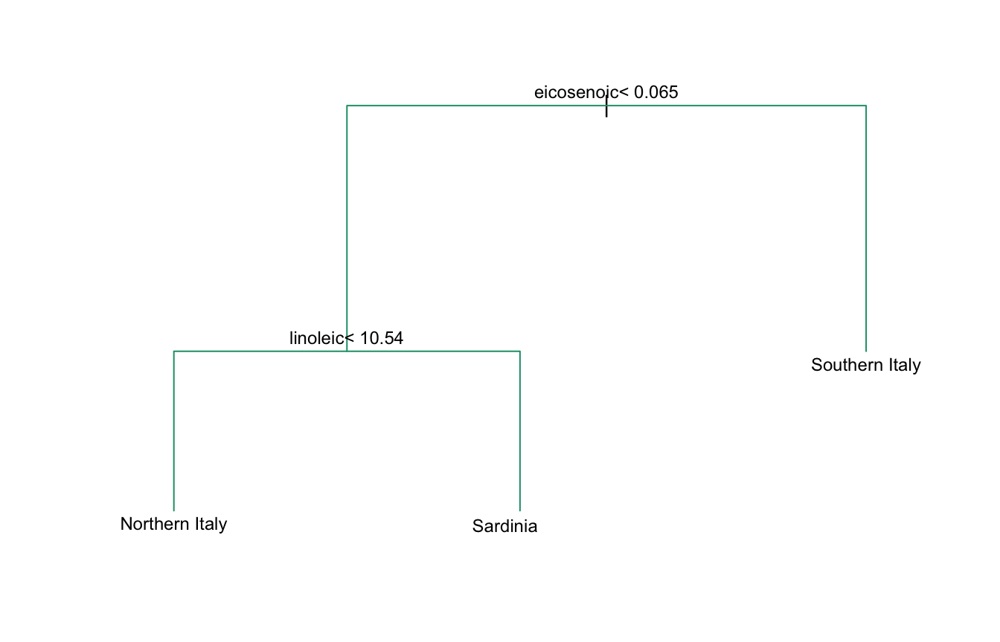
Decision trees like this are often used in practice.
For example, to decide on a person’s risk of poor outcome after having a heart attack, doctors use the following:

(Source: Walton 2010 Informal Logic, Vol. 30, No. 2, pp. 159-1842.)
A tree is basically a flow chart of yes or no questions.
The general idea of the methods we are describing is to define an algorithm that uses data to create these trees with predictions at the ends, referred to as nodes. Regression and decision trees operate by predicting an outcome variable \(y\) by partitioning the predictors.
36.4.3 Regression trees
When using trees, and the outcome is continuous, we call the approach a regression tree.
To introduce regression trees, we will use the 2008 poll data used in previous sections to describe the basic idea of how we build these algorithms.
As with other machine learning algorithms, we will try to estimate the conditional expectation \(f(x) = \mbox{E}(Y | X = x)\) with \(Y\) the poll margin and \(x\) the day.

( The general idea here is to build a decision tree and, at the end of each node, obtain a predictor \(\hat{y}\).
A mathematical way to describe this is: we are partitioning the predictor space into \(J\) non-overlapping regions, \(R_1, R_2, \ldots, R_J\), and then for any predictor \(x\) that falls within region \(R_j\), estimate \(f(x)\) with the average of the training observations \(y_i\) for which the associated predictor \(x_i\) is also in \(R_j\).
But how do we decide on the partition \(R_1, R_2, \ldots, R_J\) and how do we choose \(J\)? Here is where the algorithm gets a bit complicated.
Regression trees create partitions recursively.
We start the algorithm with one partition, the entire predictor space.
In our simple first example, this space is the interval [-155, 1]. But after the first step we will have two partitions.
After the second step we will split one of these partitions into two and will have three partitions, then four, and so on.
We describe how we pick the partition to further partition, and when to stop, later.
For each existing partition, we find a predictor \(j\) and value \(s\) that define two new partitions, which we will call \(R_1(j,s)\) and \(R_2(j,s)\), that split our observations in the current partition by asking if \(x_j\) is bigger than \(s\):
\[ R_1(j,s) = \{\mathbf{x} \mid x_j < s\} \mbox{ and } R_2(j,s) = \{\mathbf{x} \mid x_j \geq s\} \]
In our current example we only have one predictor, so we will always choose \(j = 1\), but in general this will not be the case.
Now, after we define the new partitions \(R_1\) and \(R_2\), and we decide to stop the partitioning, we compute predictors by taking the average of all the observations \(y\) for which the associated \(\mathbf{x}\) is in \(R_1\) and \(R_2\).
We refer to these two as \(\hat{y}_{R_1}\) and \(\hat{y}_{R_2}\) respectively.
But how do we pick \(j\) and \(s\)? Basically we find the pair that minimizes the residual sum of squares (RSS):
\[ \sum_{i:\, x_i \in R_1(j,s)} (y_i - \hat{y}_{R_1})^2 + \sum_{i:\, x_i \in R_2(j,s)} (y_i - \hat{y}_{R_2})^2 \]
This is then applied recursively to the new regions \(R_1\) and \(R_2\). We describe how we stop later, but once we are done partitioning the predictor space into regions, in each region a prediction is made using the observations in that region.
Let’s take a look at what this algorithm does on the 2008 presidential election poll data.
We will use the
rpartfunction in the rpart package.
library(rpart)
fit <- rpart(margin ~ ., data = polls_2008)Here, there is only one predictor.
Thus we do not have to decide which predictor \(j\) to split by, we simply have to decide what value \(s\) we use to split.
We can visually see where the splits were made:
plot(fit, margin = 0.1)
text(fit, cex = 0.75)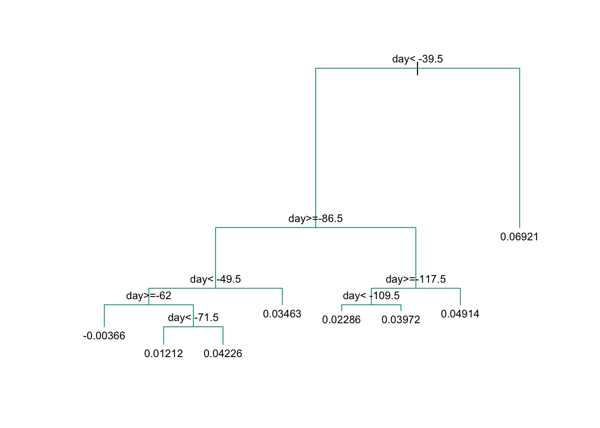
The first split is made on day 39.5.
One of those regions is then split at day 86.5.
The two resulting new partitions are split on days 49.5 and 117.5, respectively, and so on.
We end up with 8 partitions.
The final estimate \(\hat{f}(x)\) looks like this:
polls_2008 |>
mutate(y_hat = predict(fit)) |>
ggplot() +
geom_point(aes(day, margin)) +
geom_step(aes(day, y_hat), col = "red")Note that the algorithm stopped partitioning at 8.
The decision is made based on a measure referred to as complexity parameter (cp). Every time we split and define two new partitions, our training set RSS decreases.
This is because with more partitions, our model has more flexibility to adapt to the training data.
In fact, if you split until every point is its own partition, then RSS goes all the way down to 0 since the average of one value is that same value.
To avoid this, the algorithm sets a minimum for how much the RSS must improve for another partition to be added.
This parameter is referred to as the complexity parameter (cp). The RSS must improve by a factor of cp for the new partition to be added.
Large values of cp will therefore force the algorithm to stop earlier which results in fewer nodes.
However, cp is not the only parameter used to decide if we should partition a current partition or not.
Another common parameter is the minimum number of observations required in a partition before partitioning it further.
The argument used in the
rpartfunction isminsplitand the default is 20.The
rpartimplementation of regression trees also permits users to determine a minimum number of observations in each node.The argument is
minbucketand defaults toround(minsplit/3).As expected, if we set
cp = 0andminsplit = 2, then our prediction is as flexible as possible and our predictor is our original data:
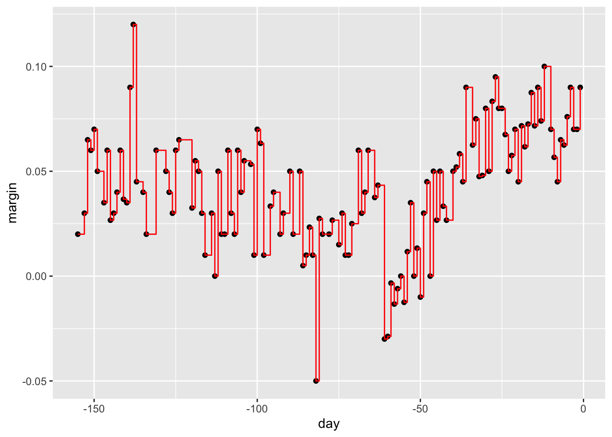
Intuitively we know that this is not a good approach as it will generally result in over-training.
These
cp,minsplit, andminbucket, three parameters can be used to control the variability of the final predictors.The larger these values are the more data is averaged to compute a predictor and thus reduce variability.
The drawback is that it restricts flexibility.
So how do we pick these parameters? We can use cross validation, just like with any tuning parameter.
Here is the resulting tree when we use cross validation to choose cp:
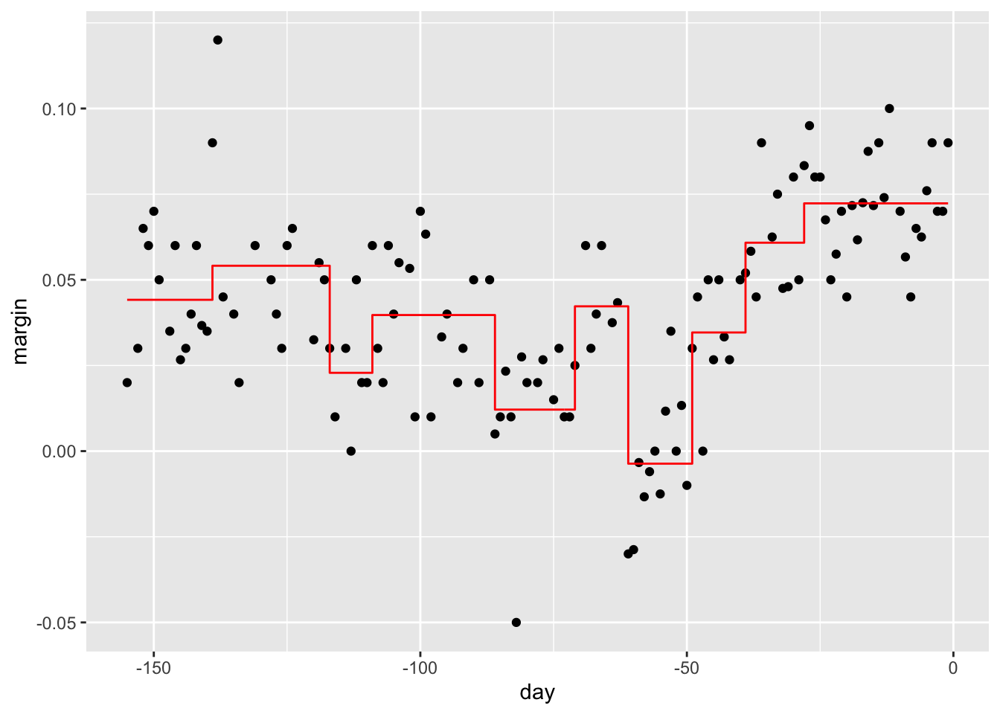
Note that if we already have a tree and want to apply a higher cp value, we can use the
prunefunction.We call this pruning a tree because we are snipping off partitions that do not meet a
cpcriterion.Here is an example where we create a tree that used a
cp = 0and then we prune it back:
fit <- rpart(margin ~ ., data = polls_2008, control = rpart.control(cp = 0))
pruned_fit <- prune(fit, cp = 0.01)36.4.4 Classification (decision) trees
Classification trees, or decision trees, are used in prediction problems where the outcome is categorical.
We use the same partitioning principle with some differences to account for the fact that we are now working with a categorical outcome.
The first difference is that we form predictions by calculating which class is the most common among the training set observations within the partition, rather than taking the average in each partition (as we can’t take the average of categories).
The second is that we can no longer use RSS to choose the partition.
While we could use the naive approach of looking for partitions that minimize training error, better performing approaches use more sophisticated metrics.
Two of the more popular ones are the Gini Index and Entropy.
In a perfect scenario, the outcomes in each of our partitions are all of the same category since this will permit perfect accuracy.
The Gini Index is going to be 0 in this scenario, and become larger the more we deviate from this scenario.
To define the Gini Index, we define \(\hat{p}_{j,k}\) as the proportion of observations in partition \(j\) that are of class \(k\). The Gini Index is defined as
\[ \mbox{Gini}(j) = \sum_{k = 1}^K \hat{p}_{j,k}(1-\hat{p}_{j,k}) \]
- If you study the formula carefully you will see that it is in fact 0 in the perfect scenario described above.
Entropy is a very similar quantity, defined as
\[ \mbox{entropy}(j) = -\sum_{k = 1}^K \hat{p}_{j,k}\log(\hat{p}_{j,k}), \mbox{ with } 0 \times \log(0) \mbox{ defined as }0 \]
If we use classification tree performs on the 2 or 7 example we achieve an accuracy of 0.81 which is better than regression, but is not as good as what we achieved with kernel methods.
The plot of the estimated conditional probability shows us the limitations of classification trees:
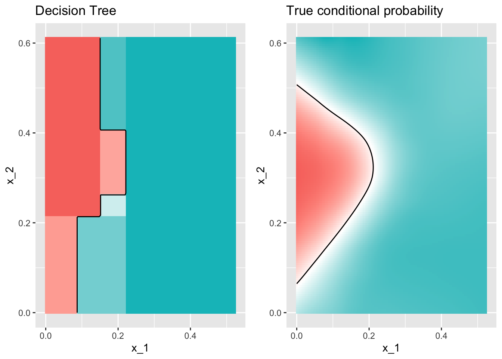
Note that with decision trees, it is difficult to make the boundaries smooth since each partition creates a discontinuity.
Classification trees have certain advantages that make them very useful.
They are highly interpretable, even more so than linear models.
They are easy to visualize (if small enough). Finally, they can model human decision processes and don’t require use of dummy predictors for categorical variables.
On the other hand, the approach via recursive partitioning can easily over-train and is therefore a bit harder to train than, for example, linear regression or kNN.
Furthermore, in terms of accuracy, it is rarely the best performing method since it is not very flexible and is highly unstable to changes in training data.
Random forests, explained next, improve on several of these shortcomings.
36.5 Random forests
Random forests are a very popular machine learning approach that addresses the shortcomings of decision trees using a clever idea.
The goal is to improve prediction performance and reduce instability by averaging multiple decision trees (a forest of trees constructed with randomness). It has two features that help accomplish this.
The first step is bootstrap aggregation or bagging. The general idea is to generate many predictors, each using regression or classification trees, and then forming a final prediction based on the average prediction of all these trees.
To assure that the individual trees are not the same, we use the bootstrap to induce randomness.
These two features combined explain the name: the bootstrap makes the individual trees randomly different, and the combination of trees is the forest. The specific steps are as follows.
1. Build \(B\) decision trees using the training set. We refer to the fitted models as \(T_1, T_2, \dots, T_B\).
2. For every observation in the test set, form a prediction \(\hat{y}_j\) using tree \(T_j\).
3. For continuous outcomes, form a final prediction with the average \(\hat{y} = \frac{1}{B} \sum_{j = 1}^B \hat{y}_j\). For categorical data classification, predict \(\hat{y}\) with majority vote (most frequent class among \(\hat{y}_1, \dots, \hat{y}_T\)).
So how do we get different decision trees from a single training set? For this, we use randomness in two ways which we explain in the steps below.
Let \(N\) be the number of observations in the training set.
To create \(T_j, \, j = 1,\ldots,B\) from the training set we do the following:
1. Create a bootstrap training set by sampling \(N\) observations from the training set with replacement. This is the first way to induce randomness.
2. A large number of features is typical in machine learning challenges. Often, many features can be informative but including them all in the model may result in overfitting. The second way random forests induce randomness is by randomly selecting features to be included in the building of each tree. A different random subset is selected for each tree. This reduces correlation between trees in the forest, thereby improving prediction accuracy.
- To illustrate how the first steps can result in smoother estimates we will demonstrate by fitting a random forest to the 2008 polls data.
*We will use the randomForest function in the randomForest package:
library(randomForest)
fit <- randomForest(margin ~ ., data = polls_2008) - Note that if we apply the function
plotto the resulting object, stored infit, we see how the error rate of our algorithm changes as we add trees.
rafalib::mypar()
plot(fit)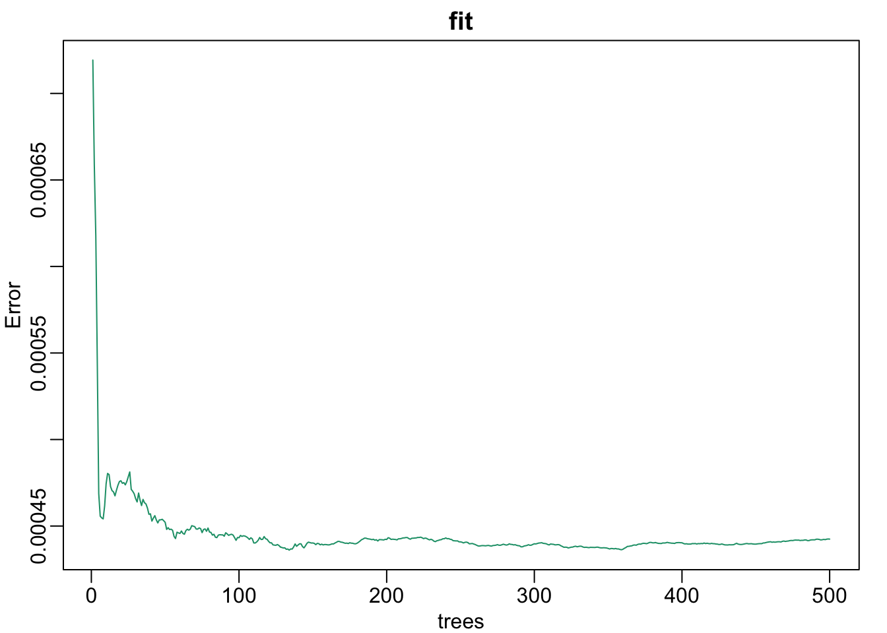
We can see that in this case, the accuracy improves as we add more trees until about 30 trees where accuracy stabilizes.
The resulting estimate for this random forest can be seen like this:
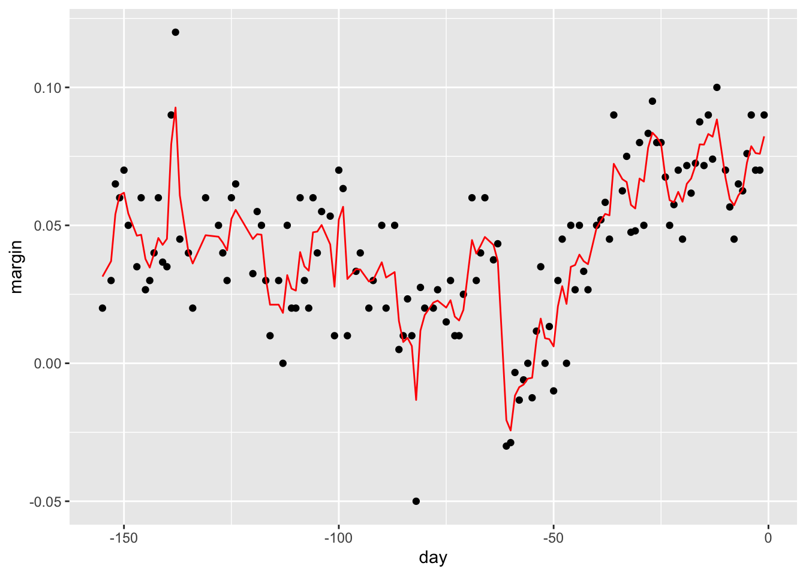
Notice that the random forest estimate is much smoother than what we achieved with the regression tree in the previous section.
This is possible because the average of many step functions can be smooth.
We can see this by visually examining how the estimate changes as we add more trees.
In the following figure you see each of the bootstrap samples for several values of \(b\) and for each one we see the tree that is fitted in grey, the previous trees that were fitted in lighter grey, and the result of averaging all the trees estimated up to that point.

library(randomForest)
train_rf <- randomForest(y ~ ., data = mnist_27$train)The accuracy for the random forest fit for our 2 or 7 example is
confusionMatrix(predict(train_rf, mnist_27$test), mnist_27$test$y)$overall["Accuracy".Here is what the conditional probabilities look like:
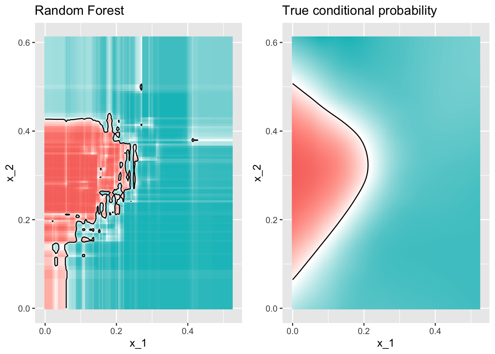
Visualizing the estimate shows that, although we obtain high accuracy, it appears that there is room for improvement by making the estimate smoother.
This could be achieved by changing the parameter that controls the minimum number of data points in the nodes of the tree.
The larger this minimum, the smoother the final estimate will be.
If we use a nodeize of 31, the number of neighbors we used with knn, we get an accuracy of
confusionMatrix(predict(train_rf_2, mnist_27$test), mnist_27$test$y)$overall["Accuracy"]. The selected model improves accuracy and provides a smoother estimate:
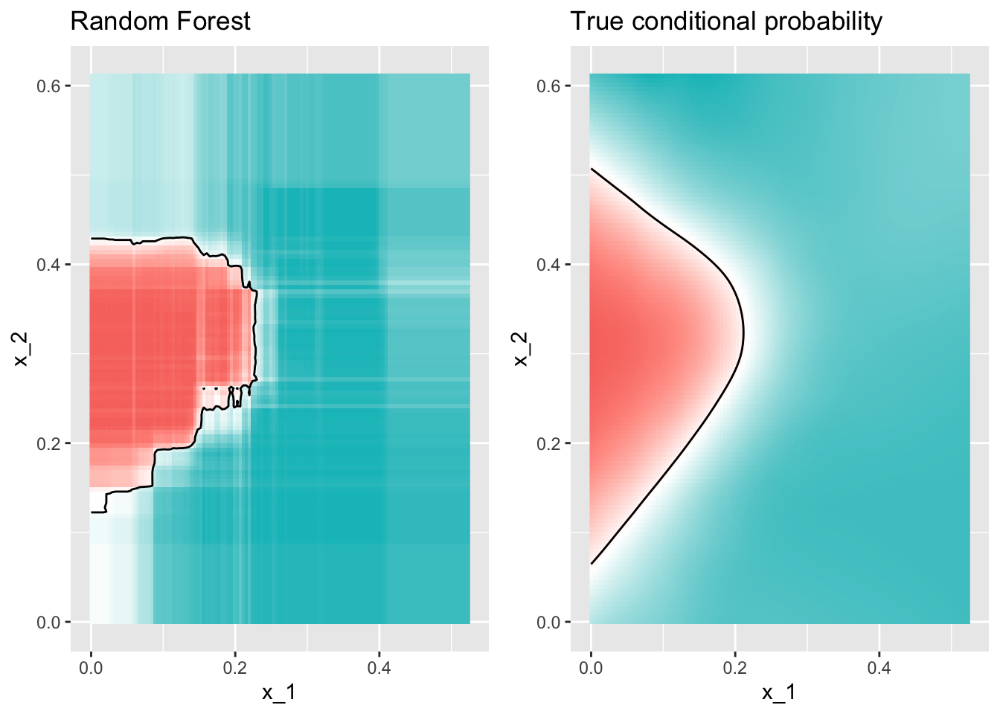
Random forest performs better than trees in all the examples we have considered.
However, a disadvantage of random forests is that we lose interpretability.
An approach that helps with interpretability is to examine variable importance. To define variable importance we count how often a predictor is used in the individual trees.
You can learn more about variable importance in an advanced machine learning book. The caret package includes the function
varImpthat extracts variable importance from any model in which the calculation is implemented.We give an example on how we use variable importance in the next section.